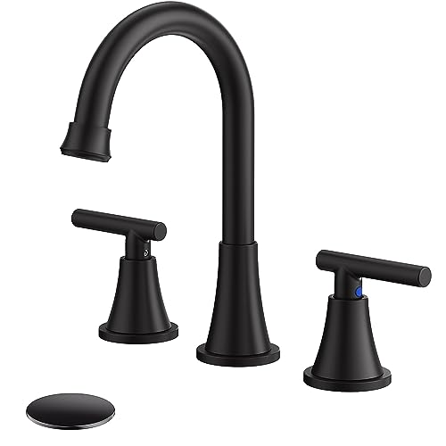
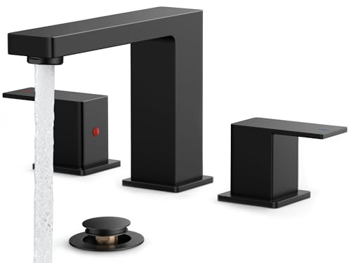
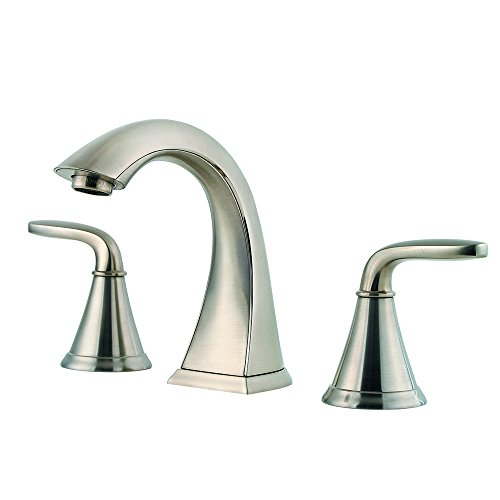

Best Single Hole vs Widespread Faucet (2026) | Best Bathroom Faucets
Prices and picks verified as of July 2026. Independent, reader-supported reviews.


Things to Know Before You Buy
- Count the holes in your sink first. One hole points to a single-hole faucet; three holes spaced 8 inches or wider point to a widespread.
- Single-hole faucets install faster and usually run $20 to $90, since there is one body and one set of supply lines to connect.
- Widespread faucets use three separate pieces and typically start around $90, with more under-sink connections to seal and inspect.
- Most single-hole faucets ship with a deck plate, so one can also cover a 4-inch three-hole sink if you change your mind later.
- Handle reach matters. Widespread handles sit far apart, which suits a wide vanity but can feel awkward on a narrow basin.
The choice of single hole vs widespread faucet comes down to one thing you can see before you ever shop: the holes already drilled in your sink or countertop. A single-hole faucet runs the spout and handle through one opening, while a widespread faucet spreads a separate spout and two handles across three holes set eight inches or more apart. Get this wrong and you either stare at empty holes or try to force a fixture where it cannot go. So before you fall for a finish, count your holes and measure the spread.
Both styles move water the same way, so the decision rests on your sink's layout, your budget, and the look you want above the basin. Single-hole faucets install faster and cost less, which is why builders default to them in compact baths and powder rooms. Widespread sets cost more and take longer to mount, but they give a wide vanity a more finished, custom look. Here is where each one makes sense.
Quick Answer
For most bathrooms, a single-hole faucet is the easier, cheaper, and faster pick, especially in powder rooms, rentals, and tight vanities. Choose a widespread faucet when you have a wide countertop, a three-hole sink already drilled at 8 inches, and you want a more traditional, higher-end look. Neither works better at the tap. They fit different sinks and budgets.
What is Single Hole?
A single-hole faucet puts everything in one place. The spout and a single lever handle mount through one opening in the sink or countertop, and water mixes inside the body before it reaches the spout. You control temperature and flow by moving that one handle left, right, up, or down. Brands like Moen build this style across nearly every finish, from the Wellton in spot-resist brushed nickel to matte black options from Ryuwanku, so you are not boxed in on looks.
The appeal is simplicity. With one body to set and one pair of supply lines to connect, you can swap a single-hole faucet in well under an hour, and there is only one base to seal against leaks. That makes it the default in new construction, apartments, and any sink with a single pre-drilled hole.
Most single-hole faucets ship with an optional deck plate, a slim cover that hides the two extra holes on a standard 4-inch three-hole sink. That detail matters: it means a single-hole faucet can sit on more sinks than its name suggests. The main trade-off is reach, since one handle close to the spout can feel cramped if your basin is unusually wide.
What is Widespread Faucet?
A widespread faucet splits the job into three separate pieces: a spout in the center and two handles, one for hot and one for cold, mounted on either side. The three parts connect under the sink through flexible hoses, and the handles can sit eight to sixteen inches apart depending on the model. That spacing is what gives a widespread its spread-out, symmetrical look.
This style suits larger sinks and wide vanities, where two close-set controls would look lost. Brands like Delta and Moen both make widespread sets with separate handles that frame the basin and read as more traditional or upscale. You also get finer control, since one hand can nudge hot while the other holds cold, the way many people grew up using a sink.
Installation asks more of you. You are setting three components instead of one, sealing three points, and connecting more lines under the cabinet, so plan for closer to an hour and a half. Your sink also has to have three holes drilled at the right spread, because a widespread faucet will not fit a single-hole basin. Spend a few minutes measuring center to center before you buy.
Head-to-Head: Build Quality & Durability
On build quality, the gap between the two is smaller than the price tags suggest. Durability comes from the valve inside, not the number of holes. Both styles use the same ceramic-disc cartridges in mid-range and better models, and that cartridge decides whether a faucet drips in year three. A Moen single-hole faucet and a Moen widespread share the same internal hardware, so they last about the same.
Where they differ is the number of seals. A single-hole faucet has one base and one set of connections to keep watertight, which means fewer places for a slow leak to start. A widespread has three mounting points and more hoses under the sink, so there is simply more to install correctly and more to inspect later. None of that makes a widespread fragile; it just gives you a few more spots to check if you ever smell a musty cabinet.
Handle feel is the other split. Two separate widespread handles tend to feel solid and deliberate, while a single lever is quicker but can loosen over years of one-handed yanking. Tighten the set screw once a year and either style holds up fine.
Head-to-Head: Price & Value
Price is the clearest line between single hole vs widespread faucets. Single-hole models dominate the budget and mid range. You can find a solid matte black option like the Ryuwanku near $29, and quality Moen picks such as the Wellton land in the $60 to $90 band. There is one body, one cartridge, and less metal, so they cost less to make and to buy.
Widespread faucets start where single-hole faucets top out. Expect to pay from about $90 into the low hundreds, with the Delta Arvo around $105. You are paying for three machined pieces, extra hoses, and the more traditional styling. Factor in installation too, since the extra connections on a widespread add time and a little labor if you hire a plumber. For a powder room you rarely linger in, that premium is hard to justify; for a primary bath vanity you use every day, many people decide the look is worth it.
Head-to-Head: Use Experience
Day to day, the difference shows up in small moments. A single-lever faucet lets you set temperature and flow in one motion, often with a wet or soapy hand, which helps when you are mid-wash and do not want to reach for two separate knobs. It is the quicker motion of the two.
A widespread gives you two handles and finer control. You can hold a steady warm by nudging each side, and the wide stance leaves room to clean around the base. Some people find the reach to a far handle a touch awkward on a narrow sink, and wiping around three separate pieces takes a few more seconds than wiping one body.
Cleaning is the quiet tiebreaker. One base means one seam where grime collects, so a single-hole faucet wipes down in seconds. Three bases mean three seams and two handle collars, all of which trap toothpaste and hard-water film. If you share a busy family bathroom, that extra upkeep adds up; if your widespread sits in a guest bath, you will barely notice it.
When to Choose Single Hole
Choose a single-hole faucet when your sink has one hole, your space is tight, or you want the simplest possible install. It is the right call for powder rooms, half baths, rental units where you want a clean swap, and any modern vanity going for a streamlined look. The decision usually tips this way on cost too: you can get a well-built Moen or a sharp matte black finish for well under $90.
It also wins if you are not sure what your sink can take. Because most single-hole models include a deck plate, one faucet covers both a true single-hole basin and a standard 4-inch three-hole sink. That flexibility makes it the safer online buy when you cannot get under the counter to measure first. For most bathrooms in most homes, a single-hole faucet is the practical default.
When to Choose Widespread Faucet
Choose a widespread faucet when you have the sink for it and you want the look. If your basin already has three holes drilled eight inches or more apart, a widespread fills that space the way it was meant to be filled, and a single-hole faucet with a deck plate can look lost on a wide counter. This is the pick for primary bathroom vanities, traditional and transitional designs, and anyone who prefers two handles for hot and cold.
The choice leans this way when daily use and resale both matter. Buyers tend to read a widespread set as a higher-end touch, so it can lift the feel of a main bath. Go in knowing the trade-offs: a bit more money up front, a longer install, and a little more cleaning around three pieces. If the vanity is wide and you use it every morning, most people find that worth it.
Our Top Picks
After comparing both sides of the single hole vs. widespread faucet debate, these are the three picks we keep recommending — one for each main scenario.

Editor’s Pick
Bathroom Faucets for Sink 3 Hole
If you want one pick that wins on the most variables in this comparison, this is the one to start with.
$39.99
Check Price on Amazon
Best Value
FORIOUS Black Bathroom Faucet 3 Hole
A budget-friendly faucet that punches above its price tag for the comparison criteria here.
$55.95
Check Price on Amazon
Premium Choice
Pfister Pasadena 8 inch Widespread 3
Step up to this faucet if you want premium build and finish that lasts longer than the average pick.
$69.07
Check Price on AmazonCan I put a widespread faucet on a single-hole sink?
Not without drilling.
Will a single-hole faucet fit my three-hole sink?
Usually yes.
Frequently Asked Questions
Can I put a widespread faucet on a single-hole sink?
Will a single-hole faucet fit my three-hole sink?
Is a widespread faucet harder to install?
Which one is better for a small bathroom?
Do single-hole and widespread faucets use different water lines?
Final Verdict
In the single hole vs widespread faucet matchup, neither style wins outright. They fit different sinks. A single-hole faucet like the Moen Wellton is the cheaper, faster, more flexible pick for powder rooms, tight vanities, and most everyday bathrooms, while a Moen or Delta widespread set earns its higher price on a wide, three-hole vanity where the spread-out look and twin handles belong. Count your holes, measure the spread, then match the faucet to the sink you actually have.